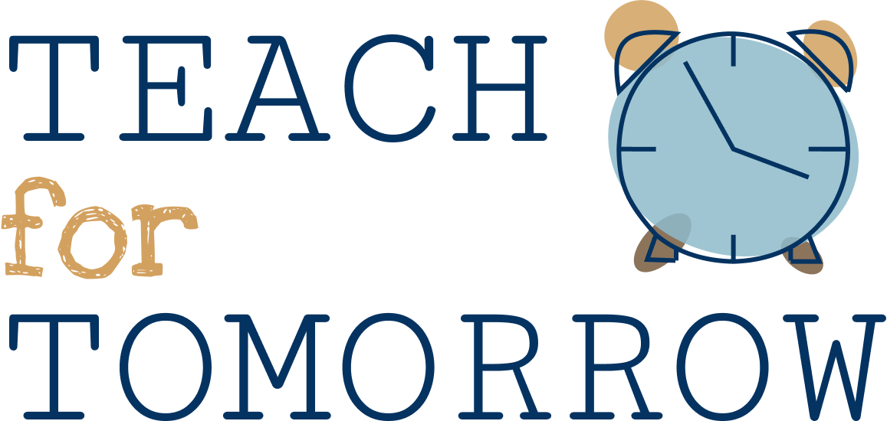

 ·
About Us
·
Meet The Team
·
Contact
·
Volunteer
·
Sign Up!
We are a student-run non-profit organization that aims to reduce the disparity in education by volunteer tutoring underprivileged students.
Sign Up Today!
About Us
x
This site is currently not available on mobile.